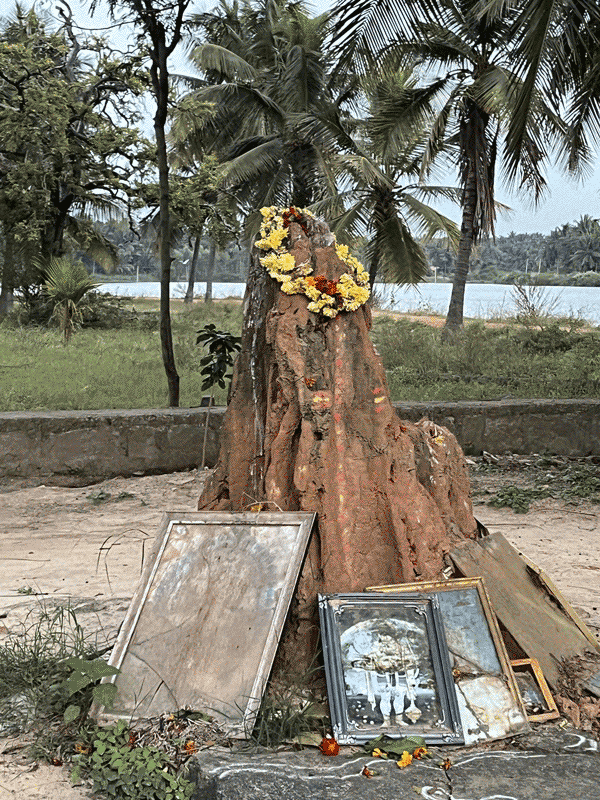
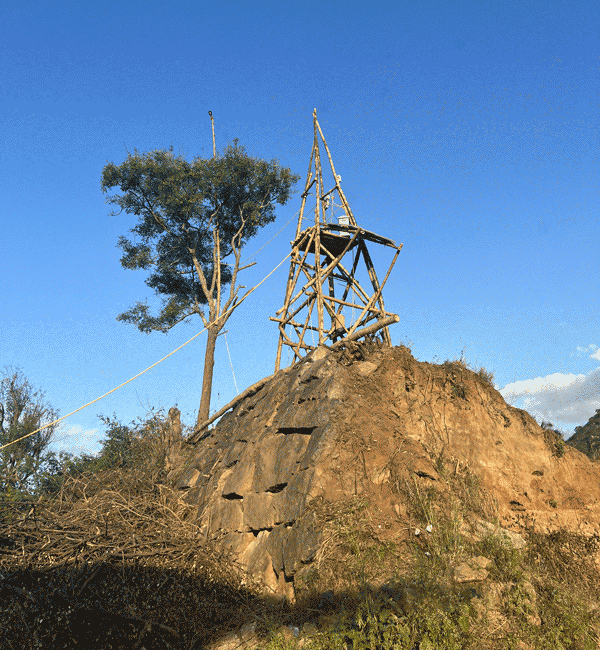
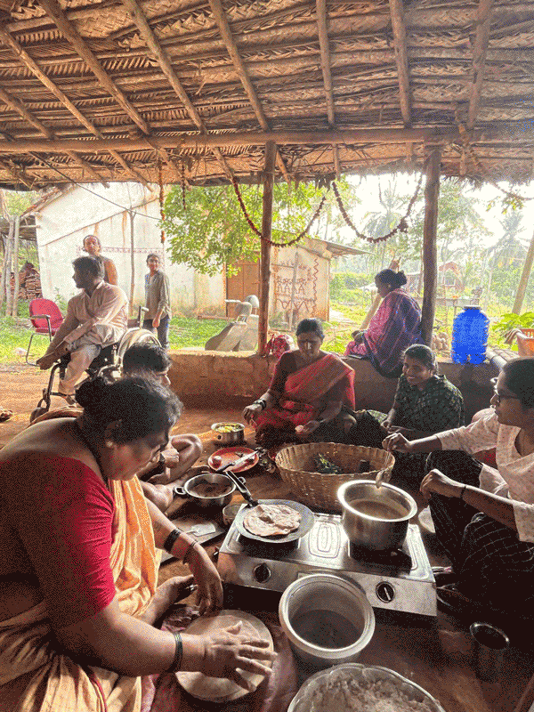
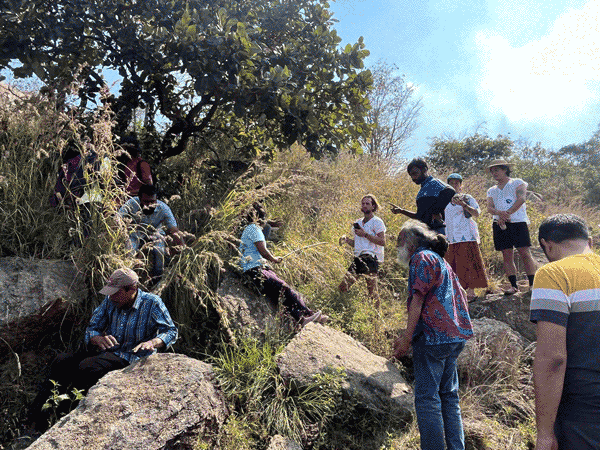

Conversation with TB Dinesh
December, 31, 2022
Dinesh is a community media activist with a background in Computer Science and the founder of Janastu in Tumkur, India. Janastu is a non-profit that has been providing free and open-source software solutions and support to small not-for-profit and non-governmental organizations (NPOs/NGOs) since 2002. This conversation begins midway through a conversation in which Mark and Dinesh reflect on Anthillhacks, hosted by Janastu. Anthillhacks is an annual event in Tumkur, India, for people to come together to investigate Wi-Fi mesh networks, their potential, and their ability to reframe what technology means in rural environments. Anthills are a metaphor for the complexity that exists beneath the surface, and ants are inspirational for embodying cooperation, coordination, and communication as principles of community networking.
A bamboo mesh tower was built during the Anthillhacks event. This bamboo tower is to be a node in the “COW Mesh,” or Community Owned and/or Operated Wireless Mesh. Dinesh and Mark delve into the challenges of the CO- in COW and what stewardship and maintenance practices for mesh networks mean in this cultural context and geography.
Anthill near Devarayanadurga in Tumkur, India. Photo by Mark A Hernandez Motaghy
MAHM: I’m still learning a lot about how this works — which is why I’m here at Anthillhacks — but as far as I understand it, the more nodes there are in a mesh network, the more resilient it is, is that correct? Because there's no single point of failure.
TBD: It's technically the right way to think. More than one path to a node, rather than more nodes, means more resilience. If there's only one path that redistributes, then when any node in between is cut off, a whole subtree is disconnected. But if it's a Graph (where there's more than one path to a node and there can be cycles), nodes can find paths to connect with others. So, that's the idea of a mesh network. Our goal is a decentralized distributed network. That means that even if the whole world — all the other nodes — go down, as long as a small server and your node is alive (if it has replicated content and some of the services), then you can still use your node to call somebody else who's connected. That way, it can be a completely decentralized space.
To do that, LibreMesh is ideal in terms of how it's structured. We are pushing the edge of what is possible. Where should we be cautious or not? Can we try out different ways of connecting? If the whole internet changes, the end users don't care as long as they can communicate with each other. We should be able to deploy, redeploy, try out, and experiment without directly affecting the end user’s access to the internet. The demystification of information technology infrastructure is an essential thing for a community-owned space: from moral values to technical upholding to how to respect their communities and how to bring connectivity in the small scale and take it forward to the large.
MAHM: I’m wondering about the particularities in Tumkur that make it possible to do a COW Mesh. For example, with the practice of a Kutumb, which means family; I learned from Sanketh that in some villages, this could extend to a family that the whole village is a part of, influencing collective decisions and the way a community is governed, maintained, and administered. Does something like the Kutumb aid in the labor and maintenance necessary for these local servers and mesh networks?
TBD: Yes, but we are not interested in making a body of Kutumb unless it happens from the community. Janastu means, "People are okay. We have nothing to do." We are not here to structurally manage and say, "There is a better way of life." No. We are just here for the facilitation of infrastructure and as observers. Just look at our COW, the community network infrastructure in Janastu, and how much we are struggling with LibreRouters, with simple things like mesh networking and managing. I mean, we have like five experts right now. We are still not connected. So we can't expect that this is replicable.
In the model of COW, we want replicability. We need to make it replicable and make it so the internet is available for others — meaning that people can create their own apps, spaces, demystify the Internet, and validate their lifestyles with their own stories. There's that opening for people to do their own thing. It's not managed from the top down.
We have a great model, but the struggle is the model. That's the sense of our work, to strive forever and not give up. Providing to the community in any which way we can because those are the things that open up the box. We need to connect with each other. It's comparable to our other main drive, which is accessibility for all. Content accessibility is the primary goal.
As much as there might be beautiful models of working, bringing people together, if it's not a replicable, free, open box way of bringing Kutumbs together, or other intentional communities, we start to think about why we are picking that particular model.
MAHM: Regarding stewardship, what's been necessary for bamboo mesh towers? I understand it depends on the village, the configuration, etc. But, for example, how many people does it take to maintain Wi-Fi at the school we visited?
TBD: Many, many. It's not an appointed person, so the network just has to grow. Nobody has the mandate to hold it together. We have to see why we are there. What is in it for them? So then you can say, “Okay, now this person came forward as a steward because of this background, this issue that came up.” Would women be comfortable being stewards? They cannot even meet other women casually in this patriarchal setup and they are unsure when it comes to being associated with technology. If an upsetting incident happens, then all eyes will be on them. That's where you need not only a steward but also a protector. It could be an elder of the community. The protector has to engage in a non-confrontational way with the community and their values. They're always cautious of how somebody from outside might come and upset “conserved” space. Women fear abuse at home and by the community resulting in push backs. They have to see our presence over time as part of the community and not think of us as someone who lights a fire and goes away. They need to see us around and to be present. And that's so much work. In one Community Radio incident, we worked on bringing out women's voices and expressions to the community over a couple of years, but it just took one incident and two men to communicate to the community that Community Radio was becoming a problem.
Bamboo Mesh Tower at the Janastu Base Camp. Photo by Mark A Hernandez Motaghy
MAHM: Could you talk more about the components that make up the bamboo mesh tower and what’s necessary to maintain it?
TBD: So the tower can be used as a metaphor for a community node in terms of its support, in terms of the tower structurally and functionally coming together. What part of it is owned by different people? Whose land is it on? That's the community-given space. Where did the bamboo come from? That's the community activity that brings the bamboo. Who built it? How many people were part of it? Did they understand the structural issues? Are they there for its longevity? Will they be able to notice something and try to fix it? These are all technically different communities. Then what goes on in the tower? Is there a router? Who maintains the router? How many routers are there? How many antennas are there? How are the different antennas made? Many of the antennas are made by the local community. Are they learning about how to make an antenna to reach certain distances? With focused beams so that they can reach longer? Are they identifying another potential pier of the tower? Would that be for a school? Who will go to the school and connect that school to the tower? These are all different people.
Who maintains the power? Is some local person willing to give power in case of need, from the grid or from their house? Is there an uninterruptible power supply (UPS)? Is that enough? If not, do we need two 20-volt conversions for certain kinds of devices? How many batteries? Who's going to maintain the battery? Do we need people to say, "Oh, let me go check if it needs some more distilled water or something"? What kind of skills do you need, and what confidence do you need? Who will have the confidence to champion this thing? Is there structural oversight of these things? Or is it self-managed? And then comes the content.
How do the others receive it? Is it the Android app or another phone? That's another small connected community of providers. And then the real content now: Where is the server that's servicing their needs? Whether it's Asterisk, whether it's an archive of their audio-video content, whether it's the maintenance of that. And then, how does replication work? What is our team's role? Are we there to just back up things in case of need? If they say, “Oops,” we say, "that's okay, we have this trick in our hat," or something like that.
The important thing is that the tower also connects to the fiber outside to get internet. The entire village deserves to be part of this usage of the internet. Are there regulatory issues? Can we sell internet bandwidth? If not, do regulations allow for sharing within closed groups, like within families or households? So that's where the community comes in as a very powerful thing. The internet service and the tower is community-owned, owned as a family, not Janastu providing internet service to them.
So coming back to your question, the number of people it takes to maintain Wi-Fi mesh is infinite. It's not black and white. And especially the way we are working. We don't want to say, "this is the model, guys," whether you want to work or not. That's not our language. We just want to open up and see. And that takes a lot of effort from our team to just be there when they want us. For example, right now nobody's getting internet from the tower, including those who helped build it. They're asking every day, “What happened?” So I'm saying, "Oh, you have to make your own antenna," and they're like, "Tell us how to do it." But there’s a two pronged problem in which we first have to be comfortable making prototypes ourselves, and then when we sit down with community members to teach them how to make the prototypes themselves, they often shy away from the technology, and leave without learning how to do it.
MAHM: I know there's been a lot of work that was put into making this offline-first so that there are services even when you're not connected to the world wide web. What services are there now and what services might there be in the future?
TBD: The tower’s server is similar to COW Mesh's but with voice communication service using Asterisk. We aim to be offline first — many services work when offline and shared content is accessible. Inclusion is the challenge. We have something called News so people can do micro-blogs and posts. It's easy, but it's still in the language that they post. But there is no easy way for the community to translate it into a different language so that more and more people have the option to be included. That's connected to Renarration Web, where we’re developing a framework for Web content accessibility for the low-literate using Web Annotation and social semantic web so that people can be able to “renarrate” content using other words and expressions so that local people can follow. This is not to be confused with what is typically known as localization, where the same text will be translated in a local language, say, English to Kannada. Renarration is more like content personalization. If you post something in English, we are allowing somebody else to say, "Ah, this is what this English post is saying, in Kannada, using an alternative text narrative or by using an audio," or something else. That is our innovation project on the large.
Then we have Stories, which are all the recordings, audio, and video. We have Nextcloud, which is currently active, where people can generate a QR code and post it, share it on their phones, and then somebody can open it and go to that link. We have calls, like an online Private Branch Exchange (PBX) service. Then we have a voucher generation capability where if you have a voucher, you can go to the internet, which is the Pirania. We have Peertube. We have page-making using HedgeDoc. Then we have Lichen, which Max Fowler was doing. All of these are internet independent. Only when you get a voucher do you go into the internet space, and that needs to be now managed by the community. So maybe we can start off by saying ten different users at a time only. Then we have to say, who's using it, and at what time? How do they share that further? We are still seeking what might be the best set of things. We're also waiting for them to ask for things. For example, would they be able to use the server as their entertainment space? Can they host their own games and play without going to the internet? Can they download interesting movies or videos and then share them? What is the proper way to share? These are all fringes where we want to test the waters.
The tower is just part of one network. The tower can also host many other networks — parallel networks, community mesh networks. So one can be a deployed community network. The other could be for our team to try different things, and, when it's stable, to give lessons or seminars. As part of a community network, we need a lab for experimentation. How does the lab coexist with a live deployment? Even for us, when Manoj from Janastu is helping make these antennas, he needs to see how far, who, and what the signals are that we need to understand. If one or two of the batteries fail, a lot of things can come down. And then, who will come? Who will provide backup resources? Can I call Max Fowler? I’ll say, “Max, help!” That's why Tania Silva (Coolab) and Hiure Queiroz (Portal Sem Porteiras) are here to assist.
Anthillhacks lunch at Janastu Base Camp, photo by Alice Yuan Zhang
MAHM: Something that I understood to be important in that construction process was the blessings made by the three Jogathi folk singers. TBD: The nice thing that happened when we were building the tower was being visited by the Jogathi folk singers. They are transgender and have worked among themselves on how to belong to this culturally loaded region as a whole and become a subculture. The community respects them, and it's important for the community to include them and acknowledge their presence in Indian culture. There is this very famous God called Ganesha, the elephant-faced god who is famous because he's considered a deformity. So what the transgender community has done is use Ganesha as a way to identify with the larger Indian culture and show that they should be respected as they are. For most of the significant rituals, they're invited to people's homes. What they have done is find a template in society where people believe that being “deformed is a blessing,” thereby opening the door to otherwise closed spaces.
Even as the tower manifests an altered form, we are blessed. The new year in South India is coming in March. It's springtime. So we have neem flowers, which are really bitter but edible. Jaggery, which is sweet. Sour sauce like tamarind. Five different flavors are put together and offered to one another. We are not just putting sweets into each other's mouths. May you accept that your year can have all these flavors mixed in. So take life as it comes. The Jogathi folk singers were there coincidentally, and we invited them for our gender sessions, and the tower thing happened at the same time. A bamboo tower is not the norm, not the AirTel tower, which is a huge metal structure. The Jogathi singers were there that day, which was a nice coming together of saying hopefully the bamboo tower will have this respect from the people for not being the normal thing. That they get used to it going forward and see it as a blessing.
Participants from Anthillhacks on a hike, learning about the local flora. Photo by Rizma.